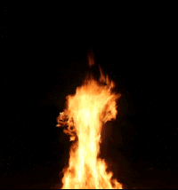

Look at the sunrise
the last dawn of human race
there is no tomorrow or any hope
just the final wish
to kill them all!
She came in the night
with the wet, blood stained gown
and the fire made flesh and sorrow
turning bones into dust
only void of hearts, turned to stones
leads to sheer emptiness
Killing all the motherfuckers!
Killing all the motherfuckers!
You can’t save them!
from me, killing all the motherfuckers,
killing all the motherfuckers!
So you’ve seen the sunset
the final doom has just begun!
She came with the light
holding torch in a marble hand
and the fire cleansed my soul with
its powerful flame, replacing all existence
with heart of stones and sharp sense
There’s no way to escape! Get out!
There is no other way out from the source of madness
to root out human behaviour!
There is no other way out from the source of sadness
Anxiety reached state of sanctity
There is no other way out from the source of madness
to root out human behaviour
There is no other way out from the source of sadness
Anxiety reached state of sanctity
There’s no way to escape! Get out!
Graciously she rose
From the Deluge waters
As if mimicking the weaves
She set her foot on the land
Mirrored in the pane
Of the Deluge waters
Light of Deneb Algedi
The Age of Goat had come
Defiant her gaze
She stepped ahead
Her daring heart
Knew nothing of dread
Defiant her gaze
She stepped ahead
Before her eyes they rose
Walls of Cyclopean stone
The shrine of the elder faith
Behind the Lioness’s Gate
She stood in awe
Then opened the door
Who could have foreseen
The terror within?
She stood in awe
Then opened the door
Her heart burnt like fire
She tasted her tear
The faintest of cries
Died in her throat
Genocide
Iconoclasm
Savagery
And mutilation
Overwhelming
Evil and triumph
Of death
Mortified she felt
Heavy breath on her neck
A touch of a cold coarse hand
On her virgin breast
With all her breath
She screamed for help
The answer never came
For there was only death
And rape
To the darkest pit she was dragged
Through hallways of pain
There was only death
And rape!
And rape!
And rape!